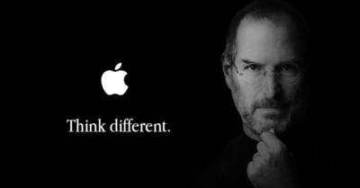

ALTERNANZA SCUOLA-LAVORO
L'AZIENDA OLIVETTI
English version

Adriano Olivetti nasce a Ivrea e ha come progetto una macchina
da scrivere molto più piccola e leggera.
Nel 1932 Olivetti diventa direttore generale dell'Olivetti.
Nel 1950 nasce la 'Lettera 22' che porta ad un aumento delle vendite del 500%.
Con la creazione di questa macchina da scrivere,

il marchio Olivetti diventa famoso anche all'estero ed addirittura acquista la Underwood, un'azienda americana. Nel 1960 Olivetti muore improvvisamente di emorragia sul treno.
Steve Jobs nasce nel 1955 e trascorre un periodo della sua vita nel quale non sa cosa fare.
Decide di partire per l'India e con il suo amico Steve, crea l'apple 1,
un calcolatore simile all'attuale tastiera di un computer. Nel 1980 con l'apple 2 è nato
il personal computer. Passa un periodo dove non sa cosa fare della sua vita. Nel 1984 crea il mouse e la grafica delle icone. Nel 1985 Jobs si dimette dalla Apple. Nel 1990 Apple sbaragliata dalle vendite Microsoft. Nel 1998 Nasce l'Imac. Nel 2004 A Jobs viene diagnosticato un tumore al pancreas. Nel 2007 E' uscito il primo iPhone. Nel 2009 Steve subisce un trapianto di fegato.
Nel 2011 si dimette dalla Apple per motivi di salute.
Il 5 ottobre 2011 muore, a 56 anni.
 video “Roberto Saviano parla di Steve Jobs e Adriano Olivetti “:
la Morte di Steve Jobs fu una disgrazie molto grossa per gli Stati Uniti. La carriera di Olivetti è stata molto più difficoltosa rispetto quella di Jobs.
video “Roberto Saviano parla di Steve Jobs e Adriano Olivetti “:
la Morte di Steve Jobs fu una disgrazie molto grossa per gli Stati Uniti. La carriera di Olivetti è stata molto più difficoltosa rispetto quella di Jobs.
video “La storia siamo noi - Adriano Olivetti 4/4 “
Nel 1963 ci fu una crisi finanziaria dovuta a una refazione momentanea dei mercati. Molta ricchezza è stata distrutta con la distruzione dell'Olivetti. Olivetti ha creato una via che successivamente alla sua morte, in Italia, nessuno è stato in grado di proseguire.
The Code: Story of Linux documentary (MULTiSUB)
-I programmi devono essere fatti come una scaletta, da seguire punto dopo punto.
-Microsoft tiene il codice del suo open source privato.
-8 milioni di pc usano linux.
-Con linux alcune persone intendono il sistema operativo, altre il kernel.
-Linux è un sistema operativo molto più facile di quello attuale.
-Linux è un sistema operativo basato su unix.
-Alan Cox è il più stretto collaboratore di Linus.
Scaletta del video TED: la mente dietro Linux
-Il presentatore di 'ted' intervista l'inventore di Linux, Linus Torvalds.
-Linux è utilizzato da molti dispositivi android e anche da molti computer.
-La sua più grande caratteristica è la tenacia .
-Lo studio di Torvalds può sembrare un normalissimo studio, ma in realtà è il centro mondiale principale di linux.
-Il verde è stato messo come sfondo perchè è un colore rilassante.
-GIT è stato il secondo progetto di Torvalds.
-Torvalds ha cambiato il futuro.
-Tesla contro Edison.
-Tesla appare cone un visionario con idee pazze.
-Edison non era simpatico come persona ma ha fatto molto.
-Idea di open source.